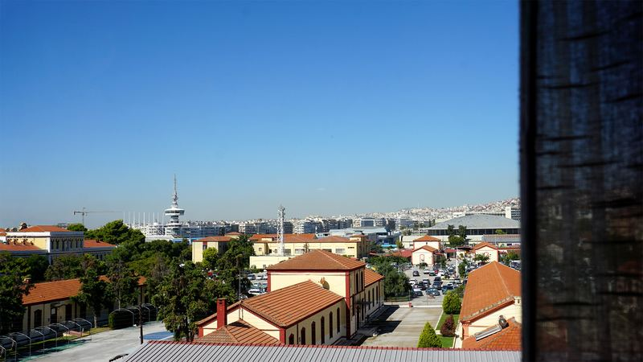
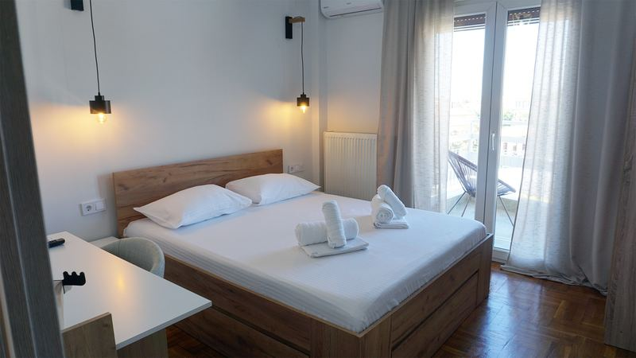
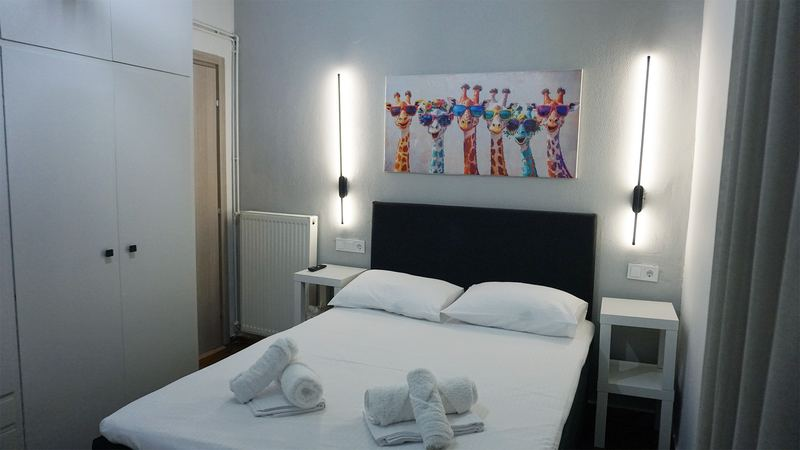
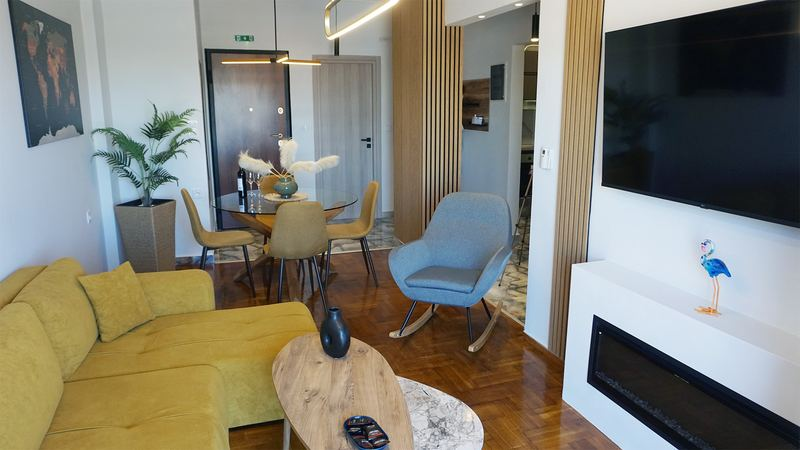

Για το κατάλυμα
έως 6 άτομα · 2 υπνοδωμάτια · 2 κρεβάτια · 1 καναπές-κρεβάτι · 1 μπάνιο · 60 τ.μ.
Φωτεινό, πλήρως ανακαινισμένο διαμέρισμα 60 τ.μ. με πανοραμική θέα σε όλη τη Θεσσαλονίκη, από τον Λευκό Πύργο μέχρι το Σέιχ Σου, και τη θάλασσα στο βάθος του ορίζοντα.
Ενιαίο σαλόνι και τραπεζαρία με ξύλινο πάτωμα, ηλεκτρικό τζάκι και μεγάλη τηλεόραση. Ο καναπές ανοίγει σε κρεβάτι.
Δύο υπνοδωμάτια με τηλεόραση και κλιματισμό: το πρώτο με διπλό κρεβάτι 160×200, γραφείο και έξοδο στο μπαλκόνι, το δεύτερο με διπλό κρεβάτι 140×200.
Πλήρως εξοπλισμένη κουζίνα με φούρνο, κεραμικές εστίες, ψυγείο, φούρνο μικροκυμάτων, καφετιέρα Nespresso, βραστήρα και τοστιέρα, και μπαράκι για πρωινό.
Μοντέρνο μπάνιο με ντους-βροχή, πετσέτες, μπουρνούζια και προϊόντα περιποίησης.
Το μπαλκόνι, με τραπεζάκι και καρέκλες, βλέπει την πόλη: ιδανικό για τον πρωινό καφέ ή ένα ποτήρι κρασί το βράδυ.
Παροχές
- Πανοραμική θέα στην πόλη
- Μπαλκόνι
- Wi-Fi
- Κλιματισμός
- Θέρμανση
- Ηλεκτρικό τζάκι
- Τηλεόραση
- Πλήρως εξοπλισμένη κουζίνα
- Καφετιέρα Nespresso
- Καφετιέρα φίλτρου
- Φούρνος και μικροκυμάτων
- Πλυντήριο ρούχων
- Ντους-βροχή
- Σεντόνια και μαξιλαροθήκες
- Πετσέτες μπάνιου και προσώπου
- Μπουρνούζια
- Σαμπουάν και αφρόλουτρο
- Οδοντόβουρτσες και οδοντόκρεμα
- Παντόφλες
- Κέρασμα καλωσορίσματος: κρασί, μπισκότα και καφέδες
- Καναπές-κρεβάτι
- Γραφείο εργασίας
- Ασανσέρ
- Κατοικίδια κατόπιν αιτήματος
- Βρεφικό παρκοκρέβατο δωρεάν
- Αυτόνομη άφιξη με κλειδοθήκη
Τοποθεσία
Λυσιμάχου Καυταντζόγλου 32, 546 39 Θεσσαλονίκη
- Μετρό Πανεπιστήμιο: 500 μ.
- Μετρό Παπάφη: 550 μ.
- Νέα Παραλία: 650 μ.
- ΔΕΘ – Helexpo: 800 μ.
- Λευκός Πύργος: 1,3 χλμ.
- Καμάρα: 1,6 χλμ.
- Αγία Σοφία: 1,7 χλμ.